OrthoCare
O nas
OrthoCare – codziennie odpowiadamy na realne potrzeby
OrthoCare to miejsce stworzone z myślą o pacjentach, którzy oczekują więcej niż tylko standardowej konsultacji. Łączymy nowoczesne podejście medyczne z indywidualną opieką nad każdym, kto trafia pod naszą opiekę. Specjalizujemy się w precyzyjnej diagnostyce i kompleksowym leczeniu schorzeń narządu ruchu – od dolegliwości kręgosłupa po zaawansowane problemy stawowe.
Nasz zespół tworzą doświadczeni lekarze ortopedzi, a pacjenci mają również możliwość skorzystania z konsultacji neurologicznych i reumatologicznych — w ramach współpracy z lekarzami innych specjalizacji. Pracujemy zespołowo i interdyscyplinarnie — także we współpracy z Rehabilitacją Plus, czyli zespołem znakomitych fizjoterapeutów. Dzięki temu pacjenci mają zapewnioną płynną kontynuację terapii i szybszy powrót do zdrowia.
Wierzymy, że skuteczne leczenie zaczyna się od rozmowy i zaufania. Nie przyspieszamy wizyt. Słuchamy uważnie i dajemy czas — bo każdy przypadek wymaga indywidualnego podejścia i pełnego zrozumienia.
Pracujemy na sprawdzonych, wysokiej jakości preparatach, korzystamy z nowoczesnych aparatów USG, a nasi pacjenci mają dostęp do pracowni RTG, gipsowni i sali zabiegowej. Wszystkie usługi dostępne są w jednej przestrzeni – bez konieczności szukania ich poza kliniką. Dzięki temu leczenie przebiega sprawnie i bez zbędnych opóźnień.
Nasza siedziba znajduje się w nowoczesnym, przestronnym budynku zaprojektowanym z myślą o komforcie obsługi oraz sprawniejszej organizacji pracy zespołu. Do dyspozycji pacjentów jest wygodny, własny parking, a wszystkie gabinety zlokalizowane są na parterze, z łatwym dostępem bez barier.
Zaufanie, jakim obdarzają nas pacjenci, doceniła również drużyna futbolu amerykańskiego Warsaw Eagles, dla której jesteśmy oficjalnym partnerem medycznym.
Każdego dnia wychodzimy naprzeciw oczekiwaniom naszych pacjentów — z zaangażowaniem, uwagą i pełnym profesjonalizmem.
Galeria zdjęć
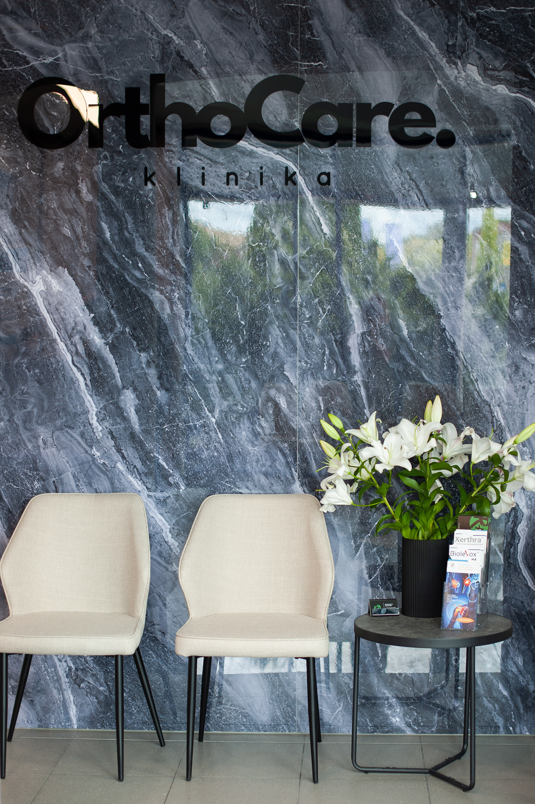
.jpg)
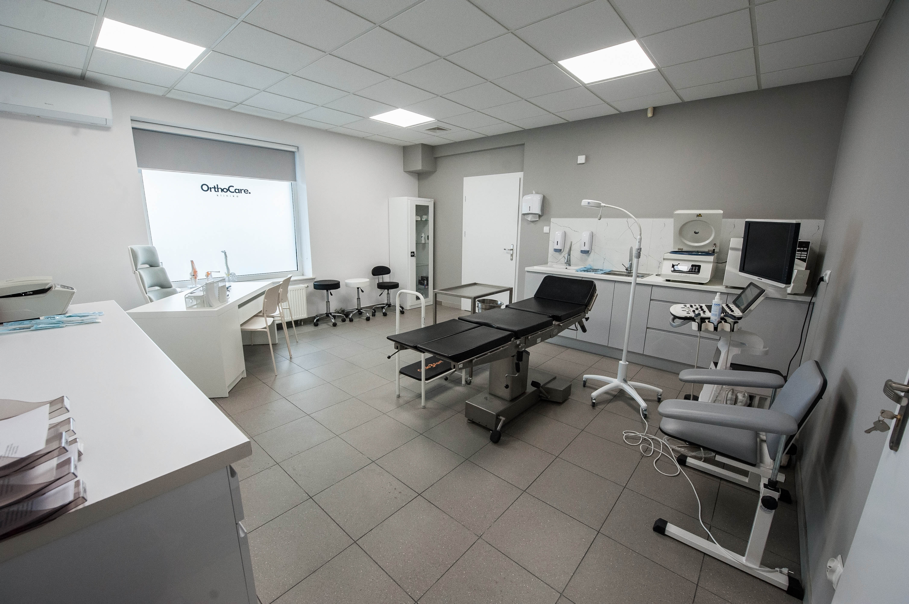
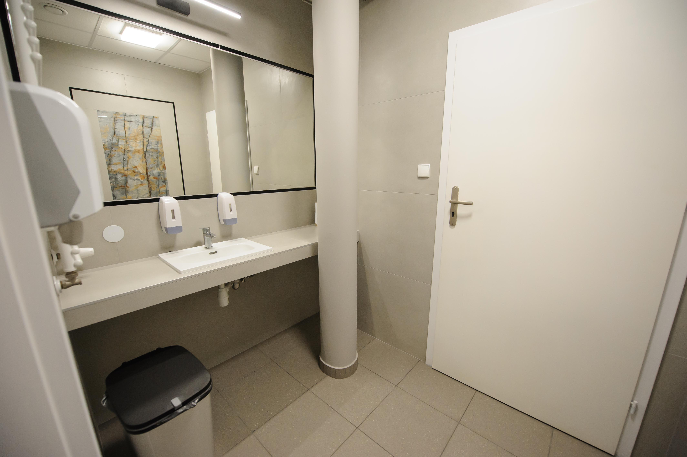
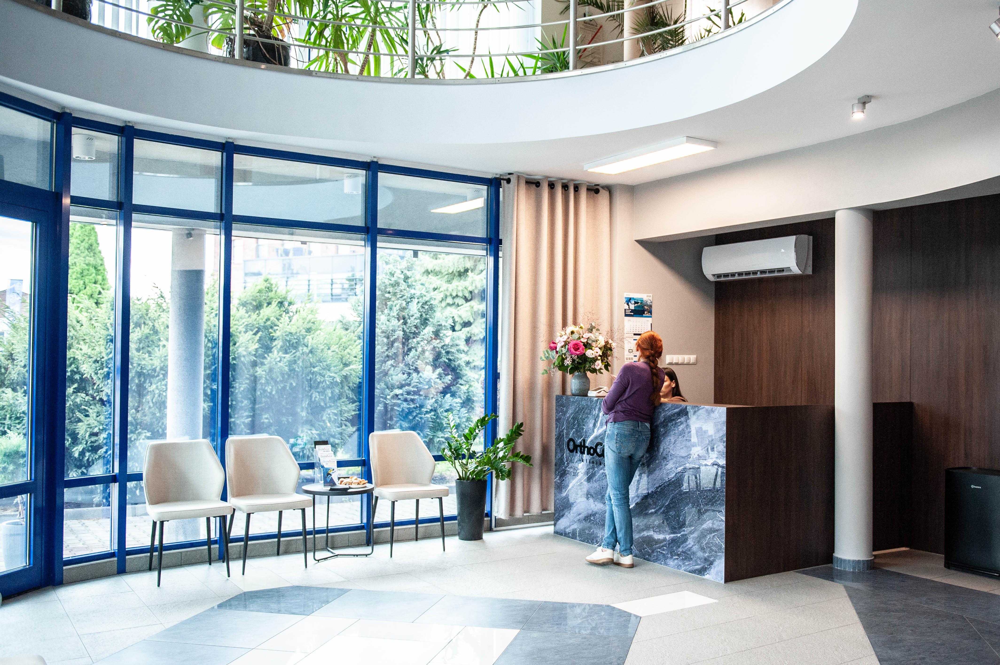
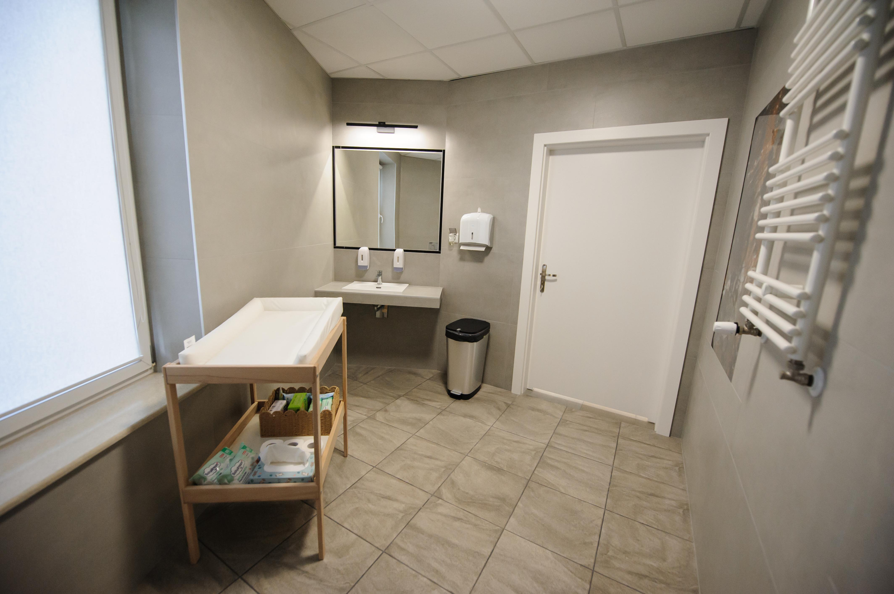
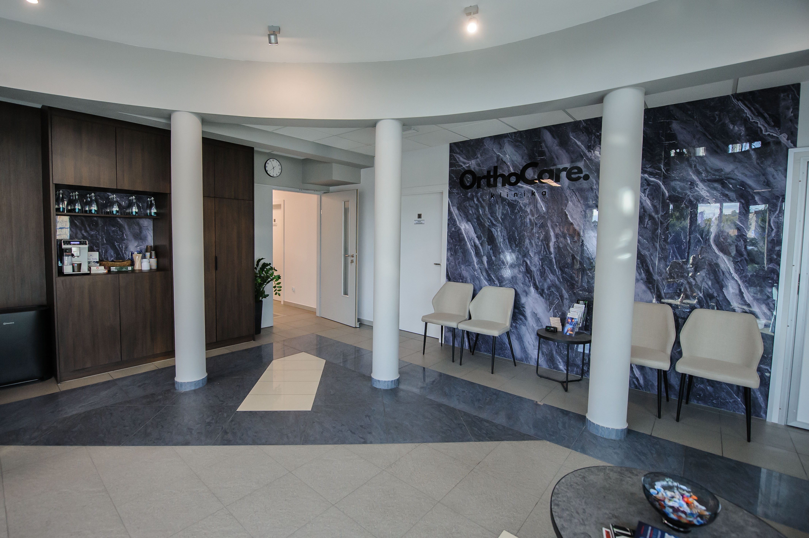
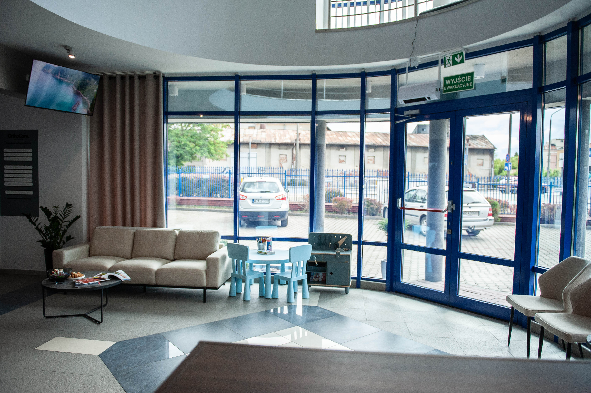
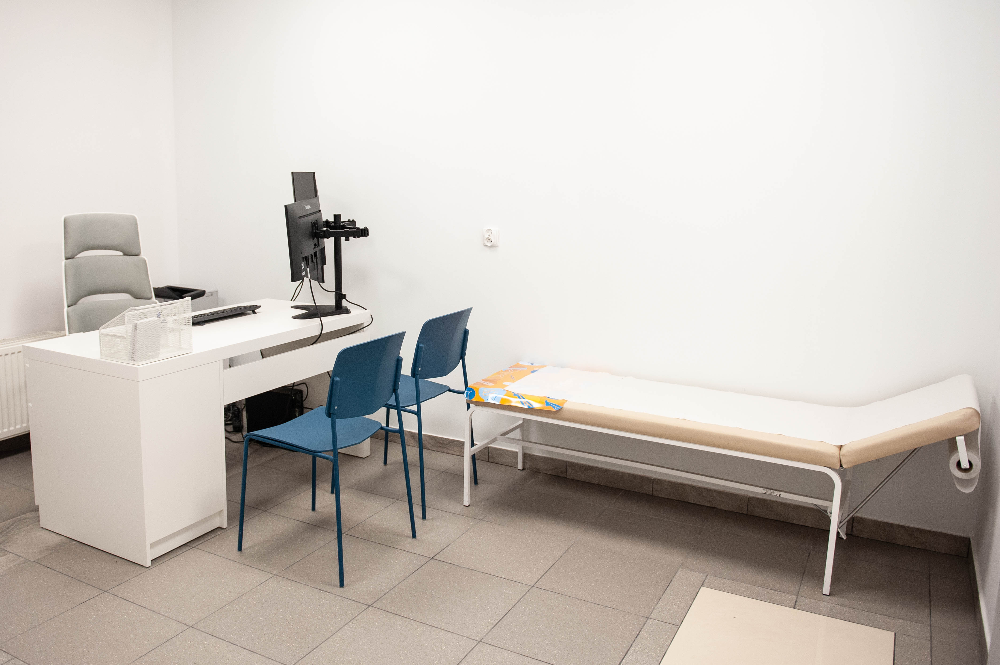
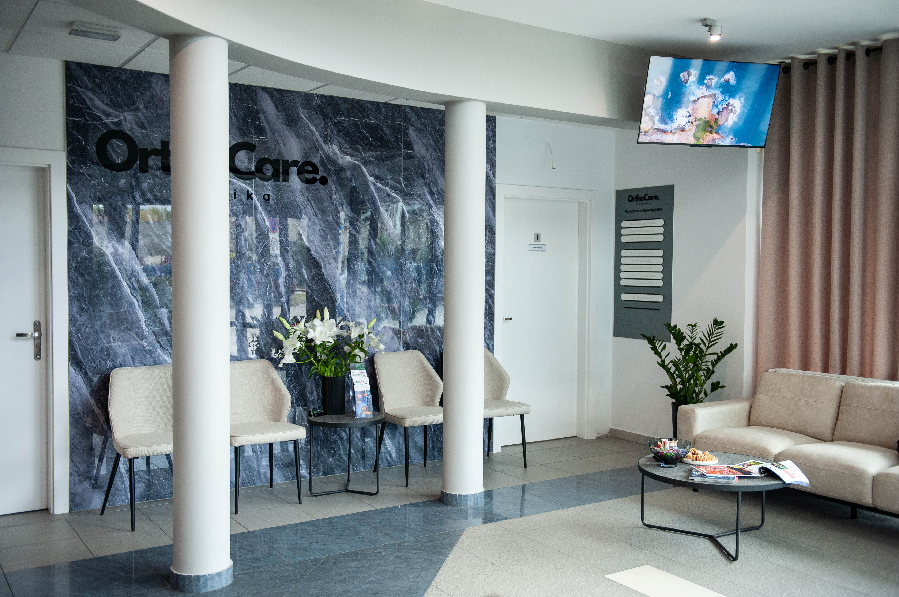
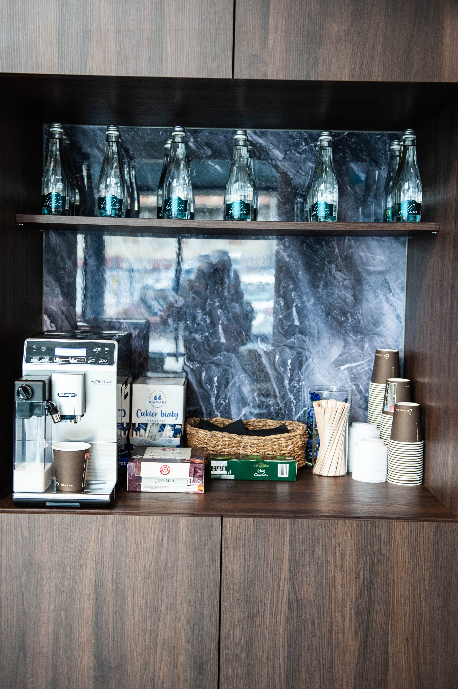
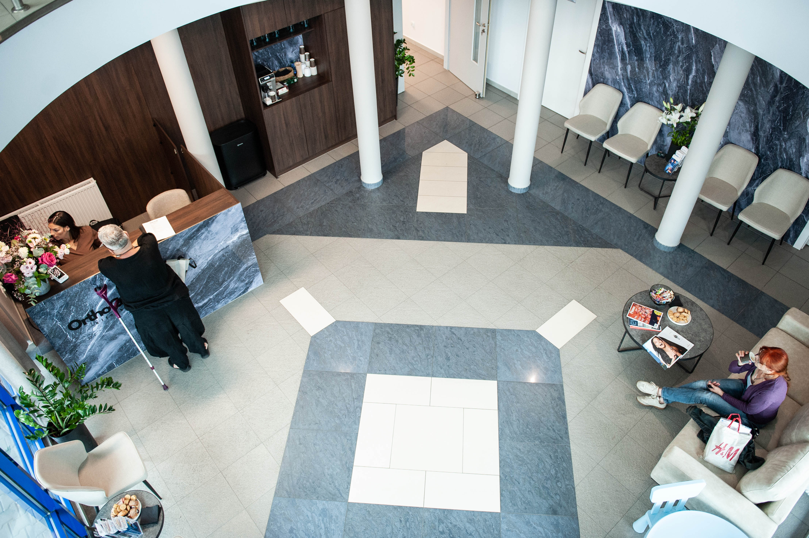